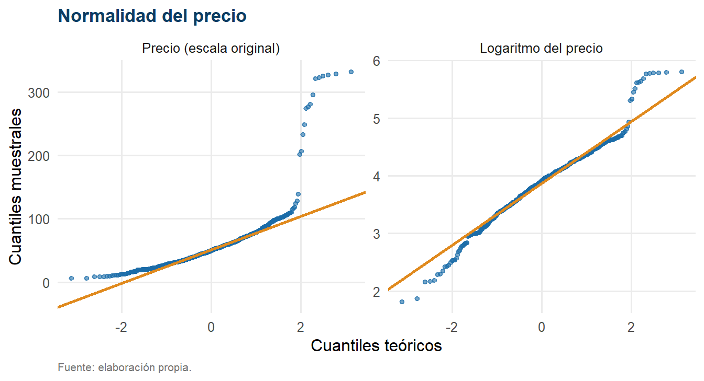
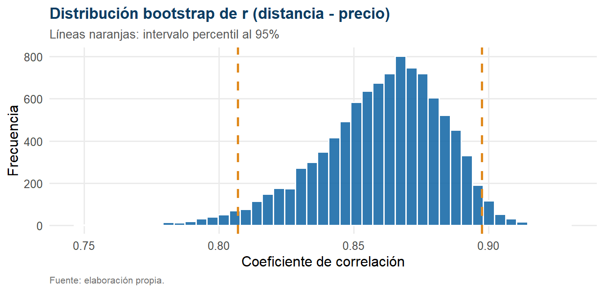
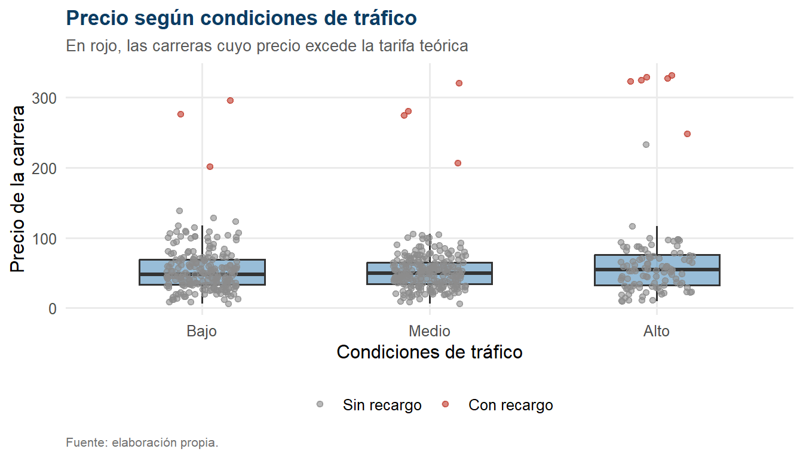

Capítulo 4 Análisis inferencial
4.1 Verificación de supuestos
4.1.1 Normalidad
| Variable | Estadístico W | Valor p | Decisión |
|---|---|---|---|
| Precio | 0.6509 | < 0,001 | se rechaza la hipótesis nula |
| Logaritmo del precio | 0.9731 | < 0,001 | se rechaza la hipótesis nula |

Figure 4.1: Gráficos cuantil-cuantil del precio en escala original y logarítmica.
Interpretación. La prueba de Shapiro–Wilk rechaza la normalidad del precio de forma categórica, con un estadístico \(W = 0.651\) muy alejado de la unidad. La transformación logarítmica mejora sustancialmente el ajuste —\(W\) asciende hasta 0.973—, aunque el rechazo persiste.
Este resultado debe interpretarse con criterio y no de forma mecánica. Con \(n = 562\) observaciones, la prueba de Shapiro–Wilk alcanza una potencia tan elevada que detecta desviaciones de la normalidad irrelevantes en la práctica. El panel izquierdo de la Figura 4.1 muestra que la desviación se concentra casi por completo en el extremo superior —los mismos valores atípicos de larga distancia ya identificados—, mientras que el cuerpo central de la distribución se ajusta razonablemente a la recta teórica. Además, el teorema central del límite garantiza la normalidad asintótica de la media muestral con tamaños de muestra como el disponible.
La decisión metodológica que se adopta, en consecuencia, no es descartar las pruebas paramétricas sino acompañar cada una de ellas con su equivalente no paramétrico, y considerar sólida únicamente la conclusión en que ambas coincidan.
4.1.2 Homogeneidad de varianzas
| Factor | F | gl | Valor p | Decisión |
|---|---|---|---|---|
| Tráfico | 6.489 | 2 ; 559 | = 0.0016 | se rechaza la hipótesis nula |
| Clima | 0.318 | 2 ; 559 | = 0.7275 | no se rechaza la hipótesis nula |
| Franja horaria | 0.051 | 3 ; 558 | = 0.9849 | no se rechaza la hipótesis nula |
| Día | 0.640 | 1 ; 560 | = 0.4242 | no se rechaza la hipótesis nula |
Interpretación. El supuesto de homocedasticidad se cumple para el clima, la franja horaria y el día de la semana, pero se rechaza para el tráfico (\(p\) = 0.0016). Las varianzas del precio difieren significativamente entre condiciones de circulación, tal como anticipaba la Tabla 3.4.
Esta violación tiene una consecuencia práctica precisa: el ANOVA clásico aplicado al factor tráfico no es válido en su forma estándar, porque su estadístico \(F\) presupone un cuadrado medio del error común a todos los grupos. Para ese factor se emplearán, además del ANOVA clásico con fines comparativos, la versión de Welch del ANOVA y la prueba de Kruskal–Wallis.
4.2 Hipótesis 1 y 2: asociación del precio con distancia y duración
\[H_0: \rho = 0 \qquad \text{frente a} \qquad H_1: \rho \neq 0\]
| Variable | r de Pearson | IC 95% de r | r cuadrado | Valor p | rho de Spearman | Intensidad |
|---|---|---|---|---|---|---|
| Distancia (km) | 0.863 | [0.840 ; 0.883] | 0.745 | < 0,001 | 0.715 | fuerte |
| Duración (min) | 0.222 | [0.142 ; 0.299] | 0.049 | < 0,001 | 0.363 | débil |
| Pasajeros | 0.016 | [-0.067 ; 0.098] | 0.000 | = 0.7087 | 0.063 | despreciable |
| Tarifa base | 0.031 | [-0.052 ; 0.113] | 0.001 | = 0.4648 | 0.079 | despreciable |
| Tarifa por km | 0.278 | [0.200 ; 0.353] | 0.077 | < 0,001 | 0.420 | débil |
| Tarifa por minuto | 0.111 | [0.029 ; 0.192] | 0.012 | = 0.0085 | 0.245 | débil |

Figure 4.2: Distribución bootstrap del coeficiente de correlación entre distancia y precio (B = 10.000).
Interpretación de H1. La correlación entre distancia y precio alcanza \(r = 0.863\), con un valor \(p\) < 0,001. Se se rechaza la hipótesis nula: la asociación es fuerte y estadísticamente significativa. El coeficiente de determinación, \(r^2 = 0.745\), indica que la distancia comparte el 74.5 % de la varianza del precio. El intervalo de confianza teórico \([0.840;\ 0.883]\) y el intervalo bootstrap \([0.807;\ 0.898]\) prácticamente coinciden (Figura 4.2), lo que confirma que la estimación no depende de los supuestos distribucionales.
Resulta informativo el contraste entre el coeficiente de Pearson y el de Spearman, \(\rho = 0.715\): el primero supera al segundo de forma apreciable. La diferencia se explica por las carreras de larga distancia y precio muy alto, que refuerzan la asociación lineal más de lo que refuerzan la asociación por rangos. Ambos coeficientes coinciden, no obstante, en calificar la relación como fuerte y significativa.
Interpretación de H2. La correlación entre duración y precio es de solo \(r = 0.222\), intensidad débil, aunque significativa (\(p\) < 0,001). La duración explica apenas el 4.9 % de la varianza del precio, frente al 74.5 % de la distancia.
Este contraste constituye un resultado sustantivo de primer orden. La estructura tarifaria contempla explícitamente un cargo por minuto, de modo que la duración debería incidir en el precio; y de hecho incide, como demuestra la significación del contraste. Pero su peso relativo es marginal frente al del cargo por distancia. La razón es aritmética y puede verificarse en los propios datos: la tarifa por kilómetro multiplica una variable con un recorrido muy amplio, mientras que la tarifa por minuto, de magnitud sensiblemente menor, multiplica una variable más acotada. En este sistema tarifario el precio lo fijan los kilómetros, no los minutos.
Por último, el número de pasajeros no presenta asociación alguna con el precio (\(r = 0.016\), \(p\) = 0.7087), resultado plenamente coherente con un esquema de tarifa regulada en el que la ocupación del vehículo no altera el importe de la carrera.
4.3 Hipótesis 3: día hábil frente a fin de semana
\[H_0: \mu_{\text{hábil}} = \mu_{\text{finde}} \qquad \text{frente a} \qquad H_1: \mu_{\text{hábil}} \neq \mu_{\text{finde}}\]
| Elemento | Resultado |
|---|---|
| n (día hábil) | 381 |
| n (fin de semana) | 181 |
| Media día hábil | 59.69 |
| Media fin de semana | 53.41 |
| Diferencia de medias | 6.28 |
| Estadístico t de Welch | 1.6858 |
| Grados de libertad | 415.6 |
| Valor p | = 0.0926 |
| IC 95% de la diferencia | [-1.04 ; 13.60] |
| d de Cohen | 0.143 |
| Magnitud del efecto | prácticamente nulo |
| Valor p (U de Mann-Whitney) | = 0.0594 |
| IC 95% bootstrap de la diferencia | [-1.04 ; 13.36] |
Interpretación. Las carreras de día hábil resultan en promedio 6.28 unidades monetarias más caras que las de fin de semana, pero esta diferencia no alcanza significación estadística: \(t = 1.686\) con \(p\) = 0.0926. Se no se rechaza la hipótesis nula.
Las tres vías de verificación convergen. El intervalo de confianza de la diferencia contiene el cero, el intervalo bootstrap incluye el valor cero y la prueba \(U\) de Mann–Whitney arroja \(p\) = 0.0594. El tamaño del efecto es, además, prácticamente nulo (\(d = 0.143\)), de modo que aunque un diseño con mayor tamaño muestral llegara a declarar significativa esta diferencia, su relevancia práctica seguiría siendo escasa.
Conviene subrayar el matiz: el valor \(p\) obtenido se sitúa por encima pero no muy lejos del umbral convencional. Un resultado no significativo no demuestra la igualdad de las medias; demuestra que la evidencia disponible es insuficiente para afirmar que difieren. La conclusión correcta es que no hay evidencia de que el día de la semana modifique el precio, no que se haya probado que no lo modifica.
4.4 Hipótesis 4, 5 y 6: los factores de contexto
\[H_0: \mu_1 = \mu_2 = \dots = \mu_k \qquad \text{frente a} \qquad H_1: \text{al menos una media difiere}\]
| Factor | Niveles | ANOVA clásico: F | ANOVA clásico: p | ANOVA de Welch: p | Kruskal-Wallis: p | Eta cuadrado | Epsilon cuadrado |
|---|---|---|---|---|---|---|---|
| Tráfico | 3 | 4.682 | = 0.0096 | = 0.0993 | = 0.3996 | 0.0165 | 0.0000 |
| Clima | 3 | 0.066 | = 0.9365 | = 0.9354 | = 0.8701 | 0.0002 | 0.0000 |
| Franja horaria | 4 | 0.043 | = 0.9883 | = 0.9880 | = 0.9405 | 0.0002 | 0.0000 |
| Fuente de variación | gl | Suma de cuadrados | Cuadrado medio | F | Valor p |
|---|---|---|---|---|---|
| trafico | 2 | 17859.41 | 8929.71 | 4.682 | 0.0096 |
| Residuals | 559 | 1066200.68 | 1907.34 |
| Comparación | Diferencia | LI 95% | LS 95% | p ajustado |
|---|---|---|---|---|
| Medio-Bajo | -1.19 | -10.83 | 8.45 | = 0.9550 |
| Alto-Bajo | 13.63 | 1.55 | 25.70 | = 0.0224 |
| Alto-Medio | 14.81 | 2.89 | 26.74 | = 0.0102 |
Interpretación de H5 y H6. El clima y la franja horaria arrojan resultados inequívocos y concordantes entre los tres procedimientos: todos los valores \(p\) son muy elevados y los tamaños del efecto, prácticamente nulos. Ni las condiciones meteorológicas ni el momento del día se asocian a variación alguna en el precio de la carrera. No se rechazan \(H_0\) en ninguno de los dos casos.
Este resultado contradice frontalmente la predicción teórica del Capítulo 1, según la cual la lluvia y la nieve deberían encarecer el servicio. La explicación se encontró ya en el análisis descriptivo: si el precio es una función determinista de la tarifa base, la distancia y la duración, entonces el clima solo podría afectarlo modificando alguno de esos componentes. Como se verá en el Capítulo 5, no lo hace.
Interpretación de H4: un caso de discrepancia entre procedimientos. El factor tráfico plantea la situación metodológicamente más interesante de todo el avance. Los tres procedimientos no coinciden:
- El ANOVA clásico arroja \(F = 4.682\) con \(p\) = 0.0096, resultado que llevaría a rechazar la hipótesis nula.
- El ANOVA de Welch, que no exige homogeneidad de varianzas, arroja \(p\) = 0.0993: no rechaza.
- La prueba de Kruskal–Wallis, basada en rangos, arroja \(p\) = 0.3996: no rechaza.
La discrepancia no es casual ni ambigua. La prueba de Brown–Forsythe ya había establecido que las varianzas del precio difieren significativamente entre condiciones de tráfico, lo que invalida el supuesto sobre el que descansa el ANOVA clásico. De los tres procedimientos, el único que declara significación es precisamente el único cuyos supuestos están violados. Por añadidura, su tamaño del efecto es minúsculo: \(\eta^2 = 0.0165\), es decir, el tráfico explicaría solo el 1.6 % de la varianza del precio. Las comparaciones de Tukey (Tabla 4.7) reflejan esa fragilidad: únicamente 2 de las tres comparaciones por pares resulta significativa.
La sección siguiente identifica el origen concreto de esta discrepancia.
4.5 Análisis de sensibilidad
Si la significación del ANOVA clásico procede de unas pocas observaciones extremas, excluirlas debería hacerla desaparecer. Se repite por ello el contraste sobre la submuestra que excluye las 13 carreras con recargo identificadas en el Capítulo 3.
| Procedimiento | Muestra completa | Excluyendo carreras con recargo |
|---|---|---|
| Brown-Forsythe (homocedasticidad) | = 0.0016 | = 0.0099 |
| ANOVA clásico | = 0.0096 | = 0.3654 |
| ANOVA de Welch | = 0.0993 | = 0.3887 |
| Kruskal-Wallis | = 0.3996 | = 0.7611 |

Figure 4.3: Precio según tráfico, distinguiendo las carreras con recargo.
Interpretación: el hallazgo central del avance. La Tabla 4.8 resuelve la discrepancia de manera concluyente. Al excluir únicamente 13 carreras de un total de 562, la significación del ANOVA clásico desaparece por completo y, simultáneamente, la heterogeneidad de varianzas deja de ser significativa. Los cuatro procedimientos pasan a coincidir.
La conclusión es doble y firme:
- El tráfico no modifica el precio de la carrera. El aparente efecto detectado por el ANOVA clásico era un artefacto producido por un puñado de observaciones extremas que, por azar o por algún mecanismo no registrado en la base, se concentran ligeramente en la categoría de tráfico alto.
- La significación estadística puede ser extraordinariamente frágil. Un resultado con \(p\) = 0.0096 sobre 562 observaciones parece sólido; sin embargo, descansaba enteramente sobre el 2.3 % de los datos. Sin el análisis de sensibilidad, el avance habría concluido erróneamente que la congestión encarece las carreras.
La Figura 4.3 lo hace visible: las cajas de los tres niveles de tráfico están alineadas, y la única diferencia apreciable entre ellos es la presencia de puntos rojos en la parte superior.
4.6 Hipótesis 7: asociación entre el recargo y las condiciones de operación
| Sin recargo | Con recargo | Total | % con recargo | |
|---|---|---|---|---|
| Bajo | 215 | 3 | 218 | 1.4 % |
| Medio | 232 | 4 | 236 | 1.7 % |
| Alto | 102 | 6 | 108 | 5.6 % |
| Sin recargo | Con recargo | |
|---|---|---|
| Bajo | 212.96 | 5.04 |
| Medio | 230.54 | 5.46 |
| Alto | 105.50 | 2.50 |
| Prueba | Estadístico | gl | Valor p | V de Cramér | Decisión | |
|---|---|---|---|---|---|---|
| X-squared | Chi-cuadrado de independencia | 6.271 | 2 | = 0.0435 | 0.106 | se rechaza la hipótesis nula |
| Exacta de Fisher | - | - | = 0.0585 | - | no se rechaza la hipótesis nula |
Interpretación. La tabla de frecuencias esperadas contiene el elemento decisivo: el valor mínimo es 2.50, muy por debajo del umbral de 5 que exige la aproximación asintótica de la prueba \(\chi^2\). En estas condiciones el valor \(p\) del contraste chi-cuadrado no es fiable, y la referencia válida es la prueba exacta de Fisher, que calcula la probabilidad bajo la distribución hipergeométrica sin aproximación alguna.
Atendiendo a Fisher, \(p\) = 0.0585, de modo que no se rechaza la hipótesis nula de independencia. La intensidad de la asociación, medida por la \(V\) de Cramér, es 0.106.
La lectura honesta de este resultado exige prudencia. Los datos sugieren una mayor proporción de recargos bajo tráfico alto, dirección coherente con la teoría del precio dinámico expuesta en el Capítulo 1; pero el contraste descansa sobre solo 13 casos con recargo, un número insuficiente para sostener una conclusión firme. Lo procedente es considerar la asociación como una hipótesis prometedora pendiente de confirmación con una muestra mayor, y no como un hallazgo establecido.
4.7 Independencia entre los factores de contexto
| Par de variables | Chi cuadrado | gl | Valor p | V de Cramér | Decisión |
|---|---|---|---|---|---|
| Tráfico x Clima | 6.714 | 4 | = 0.1518 | 0.077 | no se rechaza la hipótesis nula |
| Tráfico x Franja horaria | 4.654 | 6 | = 0.5889 | 0.064 | no se rechaza la hipótesis nula |
| Clima x Franja horaria | 5.219 | 6 | = 0.5161 | 0.068 | no se rechaza la hipótesis nula |
| Tráfico x Día | 0.669 | 2 | = 0.7158 | 0.034 | no se rechaza la hipótesis nula |
| Clima x Día | 4.387 | 2 | = 0.1115 | 0.088 | no se rechaza la hipótesis nula |
Interpretación. Ninguna pareja de factores de contexto presenta asociación significativa. Tráfico, clima, franja horaria y día de la semana son estadísticamente independientes entre sí en esta base de datos.
El resultado es relevante por dos motivos. En primer lugar, descarta la confusión estadística como explicación alternativa de los resultados anteriores: la ausencia de efecto del clima no puede atribuirse a que el clima esté confundido con el tráfico, porque no lo está. En segundo lugar, plantea una cuestión sobre la naturaleza misma de los datos: en un entorno urbano real cabría esperar cierta asociación entre lluvia y congestión, o entre franja horaria y tráfico. Su ausencia total sugiere que los factores fueron asignados de forma independiente, extremo que se discute en el capítulo siguiente.
4.8 Síntesis inferencial
| Hipótesis | Prueba principal | Valor p | Tamaño del efecto | Decisión |
|---|---|---|---|---|
| H1: distancia - precio | Correlación de Pearson | < 0,001 | r = 0.863 | se rechaza la hipótesis nula |
| H2: duración - precio | Correlación de Pearson | < 0,001 | r = 0.222 | se rechaza la hipótesis nula |
| H3: día hábil vs fin de semana | t de Welch | = 0.0926 | d = 0.143 | no se rechaza la hipótesis nula |
| H4: tráfico | ANOVA de Welch | = 0.0993 | eta2 = 0.0165 | no se rechaza la hipótesis nula |
| H5: clima | ANOVA de una vía | = 0.9365 | eta2 ~ 0 | no se rechaza la hipótesis nula |
| H6: franja horaria | ANOVA de una vía | = 0.9883 | eta2 ~ 0 | no se rechaza la hipótesis nula |
| H7: recargo - tráfico | Exacta de Fisher | = 0.0585 | V = 0.106 | no se rechaza la hipótesis nula |